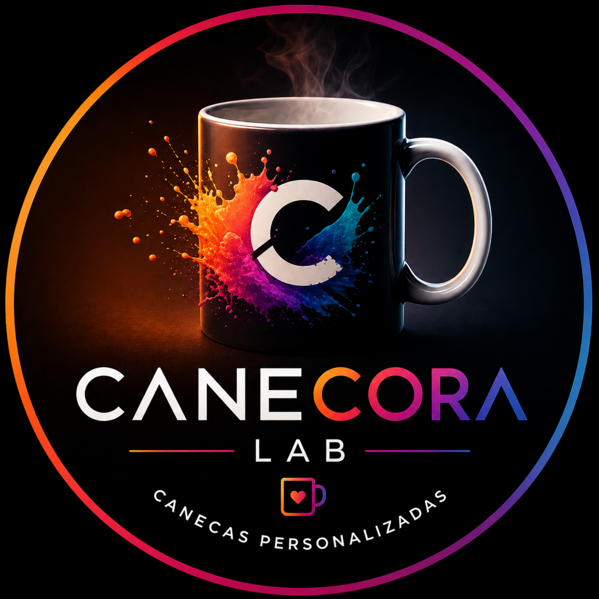

1. Veja referências
Entre no Instagram da Canecora Lab para observar estilos, cores, temas e ideias de canecas que combinam com a pessoa que você quer presentear.
Quem procura por ideias de canecas personalizadas normalmente quer mais do que um produto bonito. Quer encontrar uma ideia de presente que seja fácil de pedir, tenha apelo visual, represente a pessoa presenteada e ainda gere aquela sensação de cuidado. A Canecora Lab trabalha com canecas personalizadas feitas sob encomenda, divulgadas no Instagram e combinadas diretamente pelo WhatsApp.
O interesse por canecas personalizadas cresce porque elas resolvem um problema comum: escolher um presente que não pareça aleatório. Uma caneca com arte criada para uma pessoa, uma data ou uma situação específica mostra intenção. Ela pode ser emocional, engraçada, elegante, geek, corporativa, minimalista ou nostálgica. O importante é que a estampa tenha ligação real com quem vai receber.
Atrair pesquisas informacionais e levar para modelos no instagram é uma forma de transformar um objeto simples em uma lembrança com mais valor percebido. Quando a pessoa olha a caneca e reconhece um nome, uma foto, uma frase ou um tema que conversa com sua vida, o presente ganha força. Por isso, a página não existe apenas para repetir palavras-chave; ela organiza ideias, exemplos e caminhos para quem chegou pelo Google e quer entender se essa opção serve para a ocasião.

Uma boa personalização começa antes da produção. A pergunta não é apenas “qual imagem colocar?”, mas “qual sensação essa caneca precisa causar?”. Para uma pessoa romântica, talvez uma foto com frase curta funcione melhor. Para alguém divertido, uma piada interna pode gerar mais reação. Para empresa, o ideal pode ser uma arte limpa, com marca e mensagem de relacionamento. Para presente de família, fotos e nomes costumam criar uma conexão imediata.
Essas ideias podem ser combinadas entre si. Uma caneca pode ter foto e nome, nome e frase, tema e data, profissão e humor, pet e mensagem afetiva. O segredo é evitar excesso de informação e pensar no uso real. Uma arte bonita precisa aparecer bem na caneca, ser legível, ter equilíbrio visual e fazer sentido para a pessoa que vai receber.
Uma caneca comum pode ser encontrada em qualquer prateleira. Já uma caneca personalizada nasce de uma intenção. Ela pode lembrar um momento, brincar com uma característica da pessoa, reforçar uma relação ou transformar uma data simples em uma surpresa. É isso que aumenta o valor percebido: a pessoa entende que alguém pensou nela antes de comprar.
A caneca personalizada funciona porque mistura três coisas que o público valoriza: utilidade, lembrança e identidade. Ela não fica guardada como um objeto qualquer; aparece no café, no trabalho, no escritório, no quarto, na cozinha, na mesa de estudo e até em fotos nas redes sociais. Por isso, quando a arte conversa com a pessoa certa, o presente deixa de ser apenas uma caneca e vira um item de rotina com significado. Na Canecora Lab, a ideia principal é facilitar esse caminho. A pessoa pode chegar pelo Google, visitar o Instagram para ver modelos e chamar pelo WhatsApp para combinar uma arte que faça sentido. Essa jornada é importante porque muita gente ainda não sabe exatamente o que quer: sabe apenas que precisa de um presente bonito, diferente e com cara de cuidado. A página existe para ajudar nessa decisão.
Outro ponto importante é que a caneca personalizada não depende de grandes explicações. Quando a estampa está bem pensada, ela comunica sozinha. Uma frase certa, um nome bem colocado, uma composição visual limpa e uma imagem que tenha contexto fazem a pessoa entender rapidamente por que aquele presente foi escolhido. Esse é o tipo de detalhe que aumenta a chance de clique no Instagram e de conversa no WhatsApp.
Entre no Instagram da Canecora Lab para observar estilos, cores, temas e ideias de canecas que combinam com a pessoa que você quer presentear.
Chame no WhatsApp e envie nome, foto, frase, tema, ocasião ou referência visual. Quanto mais contexto, mais fácil criar uma proposta certeira.
Depois de ajustar a ideia, são combinados detalhes de prazo, disponibilidade, retirada ou entrega conforme a necessidade do pedido.
A caneca personalizada é uma boa escolha quando você quer presentear sem cair no genérico. Ela funciona para aniversário, namoro, casamento, formatura, datas comemorativas, colegas de trabalho, lembrancinhas, empresas, família, professores, amigos e clientes. Também funciona quando a pessoa tem um hobby forte, gosta de café, trabalha em escritório, usa caneca na rotina ou valoriza objetos com identidade.
Para buscas locais, a Canecora Lab conecta pessoas de Canoas, Porto Alegre, Cachoeirinha, Gravataí, Esteio, Sapucaia do Sul, São Leopoldo, Novo Hamburgo e região metropolitana a modelos publicados no Instagram. O Google pode mostrar esta página para quem procura uma solução próxima, mas o Instagram é onde o interesse visual cresce. Por isso, todos os caminhos levam para o perfil: a pessoa vê modelos, sente o estilo da marca e chama para transformar uma ideia em uma caneca física personalizada.
A frase ideal é curta, clara e tem ligação com a pessoa. Frases longas podem perder impacto visual, principalmente quando dividem espaço com foto, nome ou ilustração. Para presentes emocionais, uma frase simples costuma funcionar melhor do que um texto grande. Para humor, a piada precisa ser fácil de entender. Para empresas, a mensagem deve ser objetiva e respeitar a identidade da marca.
Alguns caminhos funcionam bem: usar uma frase que só a pessoa entenderia, destacar uma qualidade real, brincar com uma rotina, colocar uma data especial, transformar um apelido em arte ou usar uma mensagem de carinho. O ideal é que a pessoa bata o olho e sinta que aquela caneca foi feita para ela.
O Instagram funciona como vitrine visual da Canecora Lab. Ele mostra possibilidades, estilos e combinações. Mesmo quando uma arte específica não é a arte final do cliente, ela serve como referência para entender gosto, tema, cor, humor e acabamento visual. Isso reduz dúvida e facilita a conversa pelo WhatsApp.
Para o Google, esta página ajuda a explicar o tema em profundidade. Para o cliente, ela ajuda a escolher melhor. Para o Instagram, ela leva pessoas com intenção real: alguém que pesquisou por ideias de canecas personalizadas provavelmente já está pensando em comprar ou presentear. Esse tipo de tráfego é mais valioso do que uma visualização aleatória.
Sim. Os modelos ajudam como inspiração, mas o pedido pode ser adaptado com nome, foto, frase, tema e estilo desejado.
Não necessariamente. Você pode enviar apenas a ideia, uma referência, uma foto ou uma frase, e a Canecora Lab orienta o melhor caminho para montar a caneca.
O site funciona como porta de entrada pelo Google. O pedido é combinado pelo Instagram ou WhatsApp para facilitar dúvidas, prazo, arte e entrega.
A navegação abaixo conecta temas próximos. Isso ajuda quem está pesquisando a comparar ideias e também ajuda o Google a entender a estrutura do site.
Essas páginas foram organizadas em clusters para ajudar você a encontrar ideias parecidas e para o Google entender melhor a relação entre os temas da Canecora Lab.
Além desta página, a Canecora Lab organizou conteúdos por cidade, data comemorativa, estilo de presente e tipo de personalização. Essa estrutura ajuda quem chega pelo Google a navegar com mais facilidade e encontrar uma caneca que combine com a ocasião. Também fortalece a conexão interna entre as páginas, permitindo que o Google descubra novos conteúdos a partir de links HTML comuns.
Antes de chamar no WhatsApp, vale observar se o presente precisa ser mais emocional, divertido, corporativo, romântico, nostálgico ou minimalista. Essa escolha muda completamente a arte. Uma caneca para namorado pode usar foto e data; uma caneca para empresa pode focar em marca e relacionamento; uma caneca para pet pode destacar foto e nome; uma caneca geek pode usar estética criativa e frase curta. O importante é transformar a intenção em um produto físico bonito, útil e fácil de presentear.